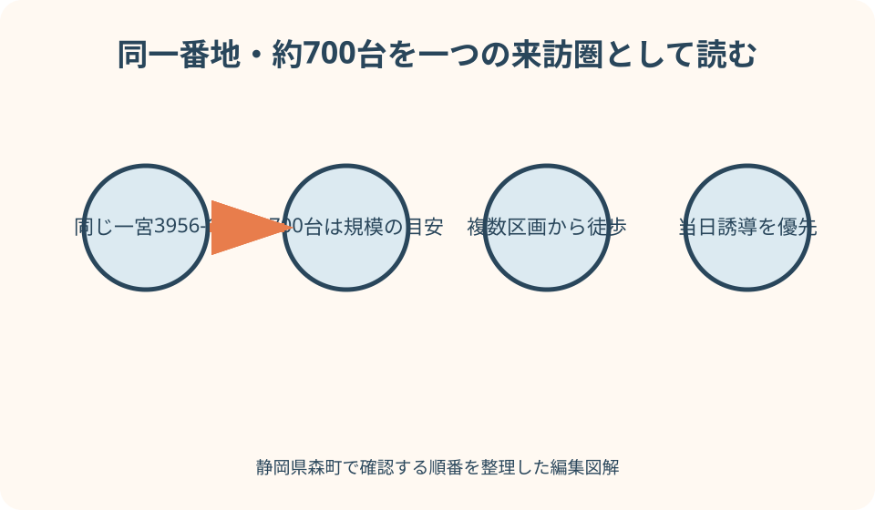
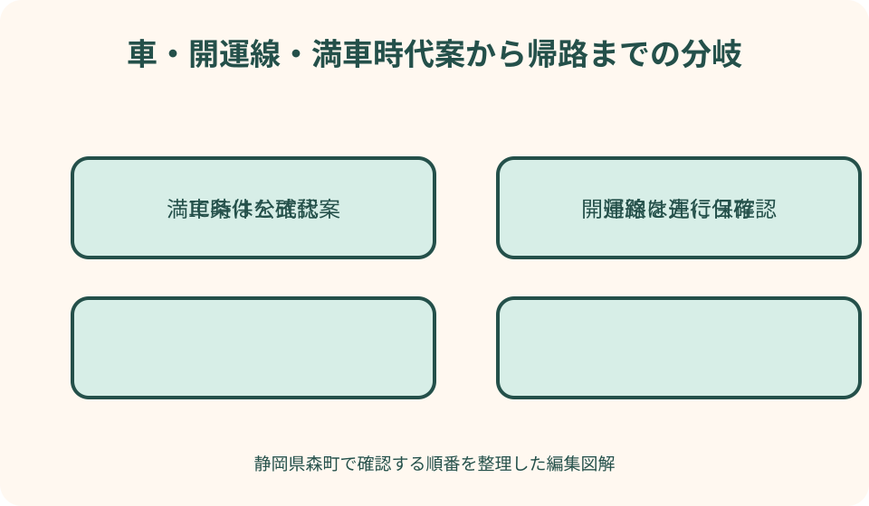

ことまち横丁・交通案内｜最終確認 2026-08-10
静岡県森町・ことまち横丁の駐車場とアクセス｜参拝と買い物を迷わずつなぐ
ことまち横丁公式と小國神社公式は、どちらも所在地を静岡県周智郡森町一宮3956-1と案内しています。横丁は一の鳥居の参道入口にあるため、参拝と食事・買い物を徒歩でつなげられます。一方、両公式に見える「無料駐車場約700台」は、横丁専用の一つの駐車場が常に700台空いているという意味にはできません。神社公式図では複数区画に分かれ、期間によって使えない場所があります。到着日は区画名より現地誘導を優先し、横丁だけ利用する日も参拝者の交通動線を共有します。

編集イラスト同じ住所を別施設の駐車場二つと読まない
ことまち横丁公式は所在地を静岡県周智郡森町一宮3956-1と掲載しています。小國神社公式の交通案内も同じ番地です。横丁は小國神社の一の鳥居、参道入口に位置する門前の飲食・買い物施設であり、ナビ上で遠く離れた二つの目的地ではありません。
同じ番地だから、横丁と神社にそれぞれ約700台の無料駐車場があり、合計約1,400台あるとは読めません。両公式の交通説明に約700台という同じ規模が出ることと、神社公式の駐車場図が周辺の複数区画を示すことから、同じ来訪圏の駐車案内として扱うのが安全です。
横丁公式の地図だけで空き区画を決めず、小國神社公式の駐車場図も確認します。図には参道入口に近い区画と、歩行時間がかかる区画があり、期間によって使えない場合があるとの注意があります。横丁へ近い場所を予約できる案内ではありません。
ナビの目的地は、ことまち横丁の公式住所と名称を使います。小國神社を目的地にしても同じ番地へ近づきますが、最後の進入口や当日誘導が異なる可能性があります。画面上の到着旗より、ことまち横丁、小國神社、駐車場を示す現地看板を読みます。
この記事は横丁を利用した個人的な体験談ではありません。2026年8月10日に確認した、横丁、神社、森町、秋葉バスの公式情報から判断手順を組み立てています。駐車場の空き、店舗営業、交通規制は当日情報を最終確認にします。
約700台を空き台数や専用枠に置き換えない
ことまち横丁公式は無料駐車場約700台、大型バス専用駐車場ありと案内しています。数字は施設周辺が受け入れられる規模を知る手掛かりですが、今この瞬間に700台分が利用できる表示ではありません。催し、工事、季節、混雑で開く区画は変わります。
小國神社公式の駐車場図には、第1、第2、第3など複数の名称と門前までの徒歩目安があります。横丁入口へ最も近い区画だけを探して周回すると、歩行者と車の流れを乱します。案内された区画へ一度で入り、歩いて参道入口へ向かいます。
古い横丁記事には800台という過去表記が残る場合があります。現在の横丁トップと神社交通案内が約700台と示す以上、古い数字を大きい方の宣伝値として使いません。数字が変わった理由を推測せず、確認日の新しい総合ページを基準にします。
大型バスは乗用車区画と別です。神社公式は専用の第2駐車場と入庫時の注意を掲載しています。団体幹事は「大型駐車場あり」だけで到着せず、バス事業者と神社へ車種、乗降、入庫、集合場所を確認します。
駐車場が無料でも、長時間の放置や周辺施設と無関係な利用が認められるとは限りません。参拝と横丁を利用する時間に絞り、閉店後や催し終了後まで車を残しません。利用時間や施錠の有無が不明なら現地で確かめます。
遠州森町スマートICからの車移動を準備する
横丁公式は新東名の遠州森町スマートICから通常時の所要目安を掲載し、小國神社に最も近いインターとして案内しています。この目安は、紅葉、正月、事故、道路工事を含む保証ではありません。買い物開始時刻ぎりぎりにICを出る計画を避けます。
森町公式によると、遠州森町スマートICはETC搭載車が利用する出入口で、対象車長や完全停止など固有の条件があります。レンタカーではETCカード、車載器、車種を確認し、条件に合わなければ森掛川ICや袋井ICなど公式に案内される別経路を選びます。
横丁の店舗を利用した後に高速へ乗る場合、スマートICと遠州森町PAの施設利用順を混同しません。PAで休憩してから高速へ乗りたい人は、一般道側の入口とスマートICの関係をNEXCO中日本と町公式で別に確認します。本記事はPA内の動線を扱いません。
スマートICから横丁までの最後の区間では、小國神社への参拝車、生活車両、路線バスが同じ道を使います。前の車が横丁へ行くとは限らず、列を追って細い道へ入らないよう、主要案内を確認します。近道検索で生活道路を選びません。
帰りは東京方面か名古屋方面かを横丁へ入る前に決めます。買い物袋を整理してからナビを設定し、運転中に同乗者へ経路検索を頼む場合も目的ICを共有します。方向を誤っても路上で転回せず、安全な場所まで進みます。
袋井駅・遠州森駅から開運線を使う
横丁公式は、JR袋井駅と天竜浜名湖鉄道の遠州森駅から路線バスで向かえると案内し、運行日への注意を付けています。バスの目的地は小國神社ですが、横丁が参道入口にあるため、同じ来訪動線で利用できます。
秋葉バスの小國神社・開運線公式には、運行カレンダー、時刻表、運賃、支払方法、各乗り場がまとまっています。この記事へ発車時刻を転記しないのは、期間ごとにダイヤが公開され、催しの臨時便や改定があり得るためです。訪問日を選んで公式を見ます。
袋井駅経由と遠州森駅経由のどちらがよいかは、出発地と帰路で決めます。片道の乗換回数だけでなく、帰りのバスから鉄道へ接続できるか、買い物荷物を持って乗り換えられるかを比べます。往路だけ成立する計画を作りません。
運行日でも便数は日によって異なります。横丁で食事、買い物、参拝をすべて行う時間を先に確保すると、帰りの便が限られます。到着後すぐ復路の乗り場を見て、買い物終了の時刻を帰りの便から逆算します。
ベビーカー、大きな荷物、車椅子、団体利用は、乗れると推測せず秋葉バスへ確認します。電子チケットや割引が案内される時期もありますが、販売期間、対象便、支払条件を当年のお知らせで確かめ、過去キャンペーンを現在の価格に使いません。

横丁と参拝を徒歩で一往復にまとめる
小國神社公式の施設案内は、ことまち横丁を一の鳥居の参道入口にある休憩・食事・土産の場所として紹介しています。車で横丁から社殿近くへ移す計画は作らず、駐車後は参道入口から歩いて参拝し、同じ動線で戻ります。
先に参拝する場合は、授与品を受けてから横丁へ戻り、食事と買い物をします。買った物を持って参道を往復せずに済む点が利点です。ただし空腹の子どもや高齢者がいるなら、短く休憩してから参拝へ進む方がよい場合があります。
先に横丁へ入る場合は、営業時間と各店舗の営業を確認します。商品を長時間車内に置けない季節なら、参拝後に買う順へ変えます。食べ歩きながら鳥居をくぐらず、飲食を終えてごみと荷物を整えてから参道へ向かいます。
一の鳥居周辺は、横丁利用者、参拝者、写真を撮る人が交わります。立ち止まってグループ全員を待つ場合も、入口や通路を塞ぎません。集合場所は休憩所など利用可能な場所を確認し、鳥居直下を待合所にしません。
雨天は傘、買い物袋、授与品で手がふさがります。撥水袋や背負える鞄を使い、横丁と参拝のどちらか一方へ絞ります。濡れた傘の置き場、店内への持込、参拝時の荷物は各施設の案内に従います。
店舗を決めてから駐車時間を見積もる
ことまち横丁公式には、茶、食事、菓子、カフェ、休憩所など複数の店舗・場所が掲載されています。横丁全体の営業時間と、各店の商品提供、売切れ、休業が同じとは限りません。訪問日に使いたい店の公式情報を確認します。
食事をする人は、注文、席待ち、食べる時間を加えます。買い物だけの人は、商品を選ぶ時間と会計を見ます。「横丁に寄る」を一律30分などへ固定せず、参拝前後のどちらで何をするかを一つ選びます。
休憩所公式は複数の休憩スペースを案内していますが、席が必ず空いている、持込飲食が自由、団体が予約できるとは断定しません。利用ルールを現地で読み、席取りの荷物を残して参拝へ行きません。
生もの、冷たい菓子、温かい飲食物は、購入後の持ち運び時間を考えます。参拝前に買うなら店へ保存と持帰りの注意を尋ね、難しければ帰る直前に購入します。車内へ長く放置しません。
閉店時刻に間に合わせるため参拝を急がせないことも大切です。到着が遅れたら横丁か参拝のどちらかを次回へ回します。飲食店が閉まっても境内の別場所で無断飲食せず、町内の営業中候補を安全な場所で探します。
繁忙期は誘導と歩行者を最優先にする
小國神社公式は、紅葉や正月などにアクセス区間の一部で交通規制が行われる場合があると案内しています。七五三、催し、花の時期にも人が重なる可能性があります。通常の入口や駐車区画を記憶で選ばず、当日のお知らせと誘導へ従います。
横丁だけ短時間利用するから近くへ停めたいという事情は、誘導を外れる理由になりません。遠い区画へ案内されたら歩くか、同行者の体力に合わなければ訪問を取りやめます。路肩で同乗者を降ろし、運転者だけ列へ残る方法を自己判断で行いません。
駐車場内では、買い物袋を持つ歩行者、子ども、高齢者、出庫車が交差します。空き区画を見つけても急に横切らず、矢印と一方通行を守ります。車を停めた後、区画名と参道入口の方向を写真に残します。
紅葉期は宮川方面へ向かう人も多く、横丁と社殿の往復だけでも混みます。食べ歩きの列、写真列、参拝列を一つと考えず、何の列か確認します。子どもと高齢者は列へ入る前にトイレと休憩を済ませます。
夜間催しがある年も、横丁の各店舗が同じ時間まで営業するとは限りません。ライトアップや臨時便の日程と、店の営業時間、駐車場退出を別に確認します。暗い時間に閉鎖区画へ戻ったり、照明の少ない近道を歩いたりしません。
帰路は買い物袋を積む前に決める
車へ戻ったら、商品、授与品、傘、子どもの荷物を分けて積みます。食品を暖房の近くや直射日光が当たる場所へ置かず、割れ物と重い物を重ねません。荷物整理中に子どもを車路へ立たせず、先に安全な座席へ乗せます。
出庫方向は入庫経路と同じとは限りません。繁忙期の一方通行や係員の案内を優先し、ナビが反対方向を示しても駐車場内で転回しません。一般道へ出て安全に停車できる場所まで進んでから経路を更新します。
スマートICへ戻る人は、ETCカードと進行方向を確認します。途中でPA施設も使いたい場合は、一般道側施設と高速流入の順序を別記事で確認します。横丁で食事したからPA休憩は不要と決めず、運転者の疲れを見ます。
バス利用者は、買い物袋を増やし過ぎないよう容量を先に決めます。帰りの停留所へ早めに戻り、列がある場合は乗務員の案内に従います。臨時便を通常便の代わりに当てにせず、当日の運行情報を再確認します。
帰宅後に食べる商品は、店から示された保存方法と期限を守ります。車の渋滞で持ち運び時間が延びた場合、安全性を自己判断で保証しません。要冷蔵品などは購入前に帰宅時間を伝え、持帰り可能か店へ尋ねます。
満車時は別区画・時間変更・別日の順で切り替える
満車表示や進入停止があれば、その場で路上待機しません。まず案内員が示す別区画へ進みます。神社公式図に区画が載っていても、当日閉じている入口を自分で開けたり、空きに見える場所へ入ったりしません。
別区画も難しい場合は、訪問時刻をずらせるか考えます。ただし近隣道路で時間をつぶしたり、コンビニなど別事業者の駐車場へ無断で停めたりしません。営業中の別目的地を利用するなら、その施設の規則と利用目的を守ります。
時間変更ができない場合は、参拝か横丁のどちらかを別日に回します。食事予約、商品受取、団体予定があるなら、運転中ではなく安全な場所から連絡します。予約していることが交通規制を越える権利にはなりません。
今後の訪問では公共交通を検討できますが、当日その場でバスへ乗り換えればよいとは限りません。運行日、駅の駐車、往復便が必要です。次回の計画として秋葉バスと森町公式を確認し、車をどこへ置くかまで決めます。
満車時の最終代案は別日です。横丁の商品や季節の景色に期限があっても、生活道路への進入や違法駐車を正当化しません。公式のお知らせを見て混雑しにくい候補日を選び直し、開店・運行・天候を再確認します。

良い点：参拝と食事を車なしでつなげられる
ことまち横丁が一の鳥居の参道入口にあるため、駐車後に参拝と食事・買い物を徒歩で組み合わせられます。町内で車を何度も出し入れせず、運転者も休めます。同行者の体力が合えば、一つの駐車で門前時間を完結できます。
横丁公式に店舗と商品カテゴリがまとまり、目的の店を事前に選べます。参拝前は休憩だけ、帰りに土産を買うなど順序を変えられます。全部の店を回る必要がなく、滞在時間を短くする選択もできます。
遠州森町スマートIC、袋井駅、遠州森駅からの交通案内があり、車と公共交通を比較できます。運行日やETC条件はありますが、家族構成、買い物量、混雑期に応じて来訪方法を選べる点は利点です。
神社、横丁、秋葉バス、森町がそれぞれ公式情報を持つため、駐車、店舗、運行、道路の情報源を使い分けられます。一つの古いまとめ記事へ頼らず、判断ごとに当事者情報へ戻ることで、変更を追いやすくなります。
注文したい点：横丁と神社の駐車関係を一枚で示してほしい
同じ住所と約700台の表記だけでは、初訪問者が横丁専用駐車場と神社駐車場を別々に想像する可能性があります。横丁入口、鳥居、複数区画、門前までの徒歩を同じ方位の地図で示し、共通の来訪動線だと説明できると分かりやすくなります。
駐車場図には掲載時点の違いがあり、工事や季節利用の注記も変わります。横丁トップの交通欄から、確認日付きの最新駐車場図と当日の区画変更へ直接進めると、古いPDFだけが共有されることを減らせます。
公共交通は「運行日に注意」とあるため、その場から秋葉バスの当月カレンダー、帰りの便、乗り場へ進める案内が重要です。横丁での推奨滞在時間を固定するのではなく、復路を先に選ぶ手順を表示すると実用的です。
満車時の公式代案も、路上待機禁止、次の区画、再訪候補、問い合わせ先の順で示せると安心です。利用者側も、穴場駐車場や抜け道を無責任に共有せず、公式誘導と地域の生活道路を尊重する必要があります。
代案・結論：横丁専用枠を探さず公式誘導へ入る
出発前は、横丁公式で店舗と交通、小國神社公式で駐車区画と規制、森町公式でスマートICまたは公共交通、秋葉バスで運行日を確認します。車なら帰路方向、バスなら復路便まで保存します。
到着後は、横丁に近い区画を自分で選ばず、開いている入口と誘導へ従います。駐車位置を記録し、参道入口まで歩きます。参拝と横丁は徒歩でつなぎ、商品を長く持ち歩くなら購入を最後へ回します。
混雑、雨、同行者の疲れがあれば、参拝と横丁の片方だけにします。満車なら別区画、時間変更、別日の順で切り替え、生活道路、路肩、他店駐車場を代案にしません。
結論は、同一番地と約700台を正しく読むことです。横丁だけの巨大駐車場を探すのではなく、小國神社周辺の複数区画と参道入口を一つの来訪圏として理解し、現地誘導、徒歩、帰路までをまとめて計画します。
大石の視点：駐車の近さより門前全体の流れを見る
私（大石）は、ことまち横丁への案内で「700台あるから停められる」と言い切りません。総数は施設の規模ですが、開設区画、歩行距離、催し、紅葉、参拝者の流れで使い勝手は変わります。数字の先にある当日の誘導を見ます。
横丁だけ利用する人も、小國神社へ参拝する人と同じ道路と門前を共有します。短時間の買い物を理由に近道、路上降車、逆走を選ばず、地域の人と歩行者が予測できる動きをすることが大切です。
参拝と買い物を一日に組める便利さは、予定を増やすためではなく、車の移動を減らすために使います。食事が混んでいれば買い物だけ、子どもが疲れれば参拝だけにし、また来られる余力を残します。
記事の確認日は2026年8月10日です。駐車区画、店舗、バス、道路規制、IC条件は変わる場合があります。横丁と神社の公式を同じ日に確認し、満車時に帰れる代案まで持って、門前の時間を楽しんでください。
公式情報・確認先
掲載内容は次の一次情報を基礎に整理しました。営業、料金、催し、交通は変わるため、出発前または手続き前にリンク先で最新情報を確認してください。
- 小國ことまち横丁（小國ことまち横丁、2026-08-10確認）
- 休憩所（小國ことまち横丁、2026-08-10確認）
- 交通案内（遠江国一宮 小國神社、2026-08-10確認）
- 新東名 遠州森町スマートIC（静岡県森町、2026-08-10確認）
- 森町の公共交通について（静岡県森町、2026-08-10確認）
- 観光（静岡県森町、2026-08-10確認）
- 小國神社開運線（秋葉バスサービス株式会社、2026-08-10確認）